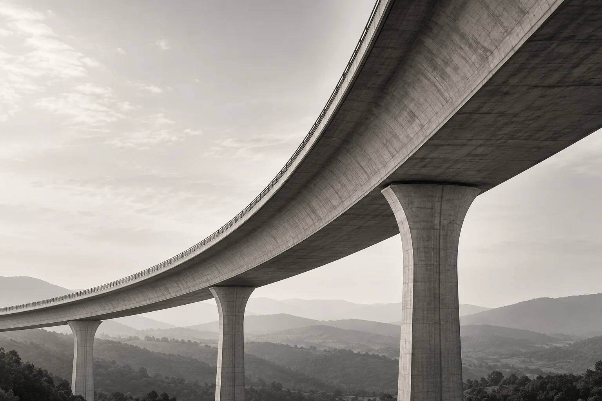
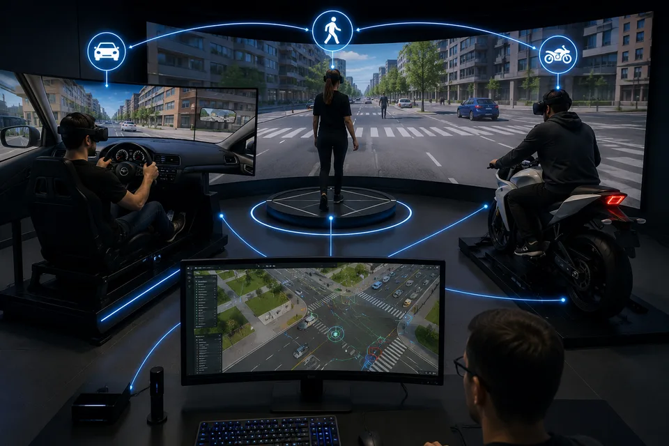
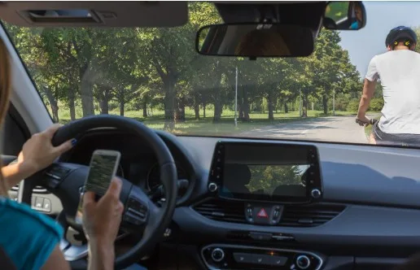

About Me
A civil engineering profile shaped by industrial experience, public service, academic research and international collaboration.
View Experience
Civil engineer integrating professional practice and scientific research to advance infrastructure, mobility and safety through innovation and digital technologies.
Explore My WorkDiscover my professional background, research projects and scientific contributions across engineering, mobility and digital innovation.
A civil engineering profile shaped by industrial experience, public service, academic research and international collaboration.
View Experience
Projects and research activities connecting road safety, immersive simulation, BIM, digital twins, fire safety engineering and human factors.
View Portfolio
Scientific publications in international journals, conference proceedings and applied transportation safety research.
View Publications
Civil Engineer and Ph.D. Candidate with a multidisciplinary profile combining transportation engineering, public safety, industrial experience and academic research. My work connects road safety, fire safety engineering, BIM-based digital twins, immersive simulation, virtual reality and human factors to address real-world challenges in mobility, infrastructure and safety.
Read more about meTransportation engineering, driving simulation, virtual reality, human factors and digital engineering methodologies.
Infrastructure engineering, mobility systems, BIM workflows and digital transformation for the built environment.
Engineering activities within the Italian National Fire and Rescue Service, with a focus on fire safety, industrial risk and regulatory compliance.
Professional experience in railway asset management, BIM implementation, property processes and digital innovation.
Transforming complex mobility challenges into innovative and data-driven engineering solutions.

Research provides methods for describing phenomena, testing hypotheses and constructing reliable models.
Thank you for visiting my website. If you would like additional information about my research, professional activities or publications, please feel free to contact me.
Get in Touch